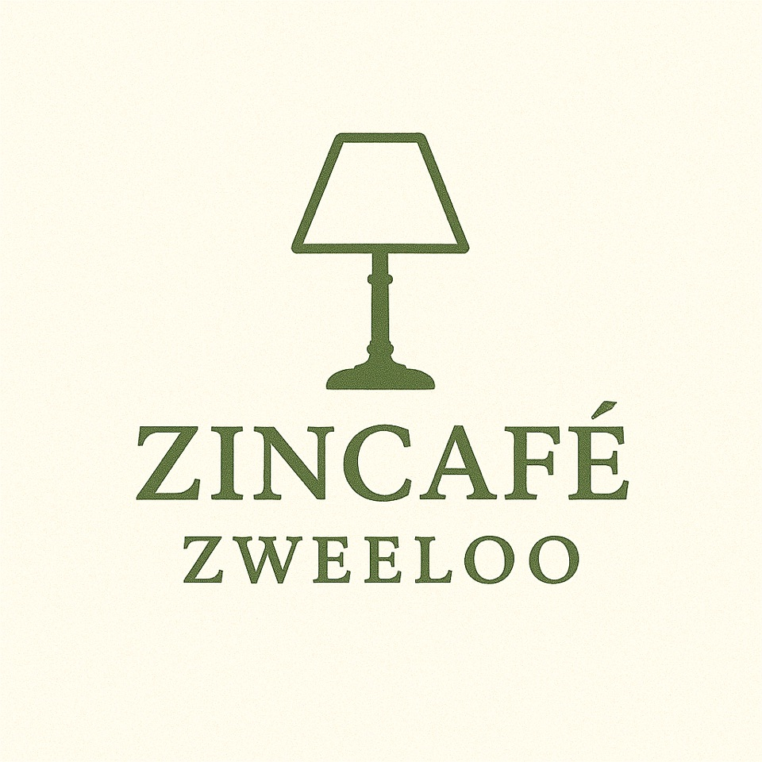

Van Aristoteles tot Žižek
In het Zincafé Zweeloo staan vragen centraal die raken aan hoe we leven, kiezen en ons tot elkaar verhouden.
De vragen die daar worden gesteld, zijn dezelfde vragen die grote denkers door de geschiedenis van de filosofie heen hebben onderzocht en beantwoord. In deze reeks volgen we die denkers.
Filosofie van A tot Z is een compacte reeks van twee avonden waarin we de grote lijnen van de westerse filosofie verkennen — van de oudheid tot nu.
Mensen hebben zich altijd afgevraagd hoe zij zich tot zichzelf, tot anderen en tot de wereld verhouden. Wat is werkelijk belangrijk? Waar laat ik mij door leiden? En hoe onderscheid ik wat van mij is, van wat mij wordt aangereikt?
Door de geschiedenis heen keren deze vragen telkens terug. Soms in religieuze beelden, soms in filosofische begrippen, soms in verhalen over schijn en werkelijkheid. Steeds gaat het om oriëntatie: leren zien waar je staat en welke richting voor jou betekenisvol is.
In Filosofie van A tot Z volgen we deze vragen langs de grote denklijnen van de westerse filosofie. Niet om tot definitieve antwoorden te komen, maar om zicht te krijgen op hoe mensen in verschillende tijden met dezelfde vragen zijn omgegaan.
Door de geschiedenis heen keren steeds dezelfde kernvragen terug. Ze vormen het uitgangspunt van deze reeks:
Langs deze vragen maken we een beweging door de filosofiegeschiedenis en staan we stil bij denkers en ideeën die ons denken tot op vandaag mede vormgeven.
Twee maandagavonden: 1 en 8 juni 2026.
19:30 – 21:30 uur
De Kapschuur, Klooster 4 in Zweeloo
Iedereen, voorkennis of deelname aan het Zincafé niet nodig
Deze reeks is volgeboekt. Wil je op de wachtlijst staan voor een eventuele volgende reeks, of heb je een vraag? Stuur ons een mail.